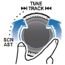
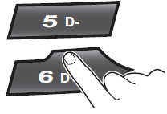

While playing, turn the ▶▶│TRACK│◀◀ dial left/right to moves to the previous or next track.
Clockwise: move to the next file
Counter-clockwise: move to the previous file
You can skip files within the same folder.

While the ▶▶│TRACK│◀◀ dial is being turned and held, the file will rewind or fast forward at high speed. Once released, the file will begin playing at normal speed.
Clockwise: fast forward
Counter-clockwise: fast rewind
The search function works but search speed is not constant.
While fast forwarding or rewinding, you can only hear
intermittent sounds.

Press the [5 D-] or [6 D+] button to moves to the previous or next folder.
[5 D-]: move to previous folder
[6 D+]: move to next folder
While folder moving, he folder name will be displayed briefly.